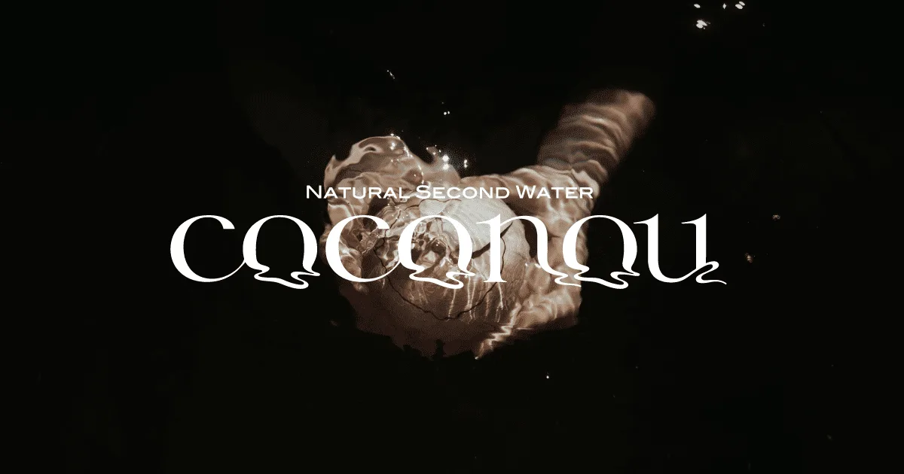
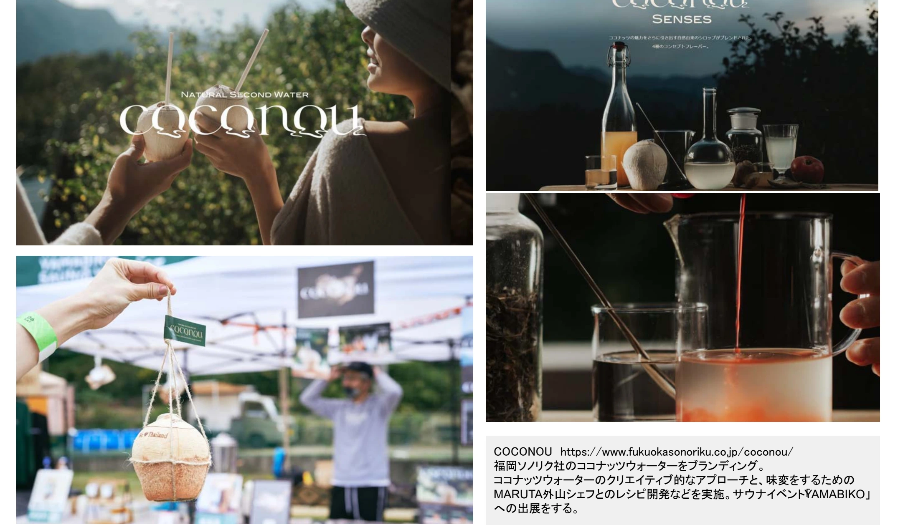

食・農
COCONOU


PROJECT INFORMATION
公式サイトを見る ↗（新しいタブで開く）福岡ソノリクの「COCONOU」。ブランディング、Webサイト、パッケージデザイン、イベント出展を担当しています。
01 / 背景とテーマ
輪郭を与える
福岡のソノリク社が扱うココナッツウォーター。飲料としては知られていても、どう楽しむかの提案がありませんでした。
02 / SCHEMAの担当範囲
全体を整える
SCHEMAはブランディング、Webサイト、パッケージデザイン、イベント出展までを担当。MARUTAの外山シェフとともに、味を変えて楽しむためのレシピ開発も行いました。
03 / 取り組みの視点
枠組みをひらく
サウナイベント「YAMABIKO」への出展など、飲む場面そのものを提案しています。商品のデザインにとどまらず、使われ方まで含めて設計した取り組みです。
CREDITS
クレジット
- ブランディング・ＷＥＢサイト・パッケージデザイン・イベント出展
- SCHEMA
- レシピ開発
- 外山シェフ（MARUTA）